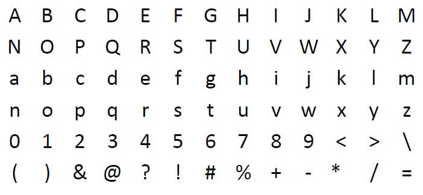
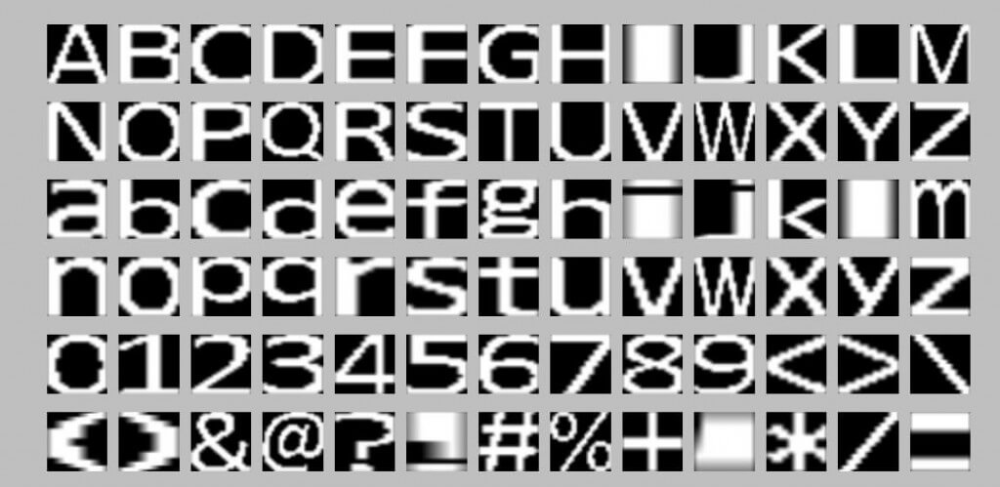
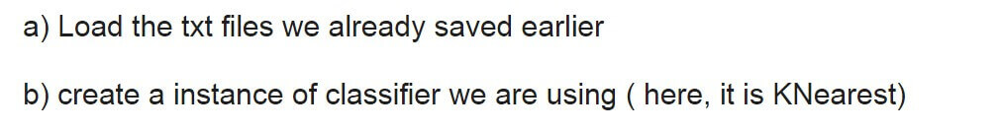
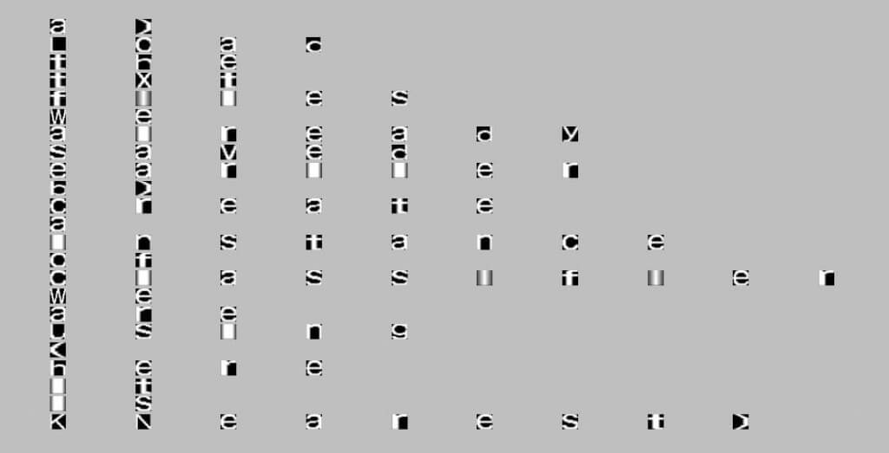
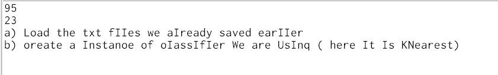
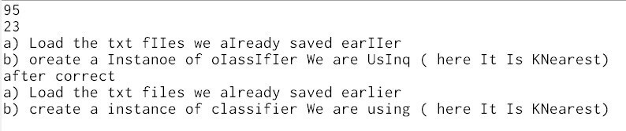

<!DOCTYPE html>


<html lang="en">


<head>
  <meta charset="utf-8" />
   
  <meta name="keywords" content="c,c++,java,python,leetcode,algorithm,reading,life,moods,machine-learning,data-mining,deep-learning,AI" />
   
  <meta name="description" content="一个分享机器学习、算法与数据结构，个人学习心得、读书笔记、生活的博客。" />
  
  <meta name="viewport" content="width=device-width, initial-scale=1, maximum-scale=1" />
  <title>
    ocr 识别 |  一个分享机器学习、算法与数据结构，个人学习心得、读书笔记、生活的博客。
  </title>
  <meta name="generator" content="hexo-theme-ayer">
  
  <link rel="shortcut icon" href="/favicon.ico" />
  
  
<link rel="stylesheet" href="/dist/main.css">

  
<link rel="stylesheet" href="https://cdn.jsdelivr.net/gh/Shen-Yu/cdn/css/remixicon.min.css">

  
<link rel="stylesheet" href="/css/custom.css">

  
  
<script src="https://cdn.jsdelivr.net/npm/pace-js@1.0.2/pace.min.js"></script>

  
  

  

</head>

</html>

<body>
  <div id="app">
    
      
    <main class="content on">
      <section class="outer">
  <article
  id="post-ocr-procedure"
  class="article article-type-post"
  itemscope
  itemprop="blogPost"
  data-scroll-reveal
>
  <div class="article-inner">
    
    <header class="article-header">
       
<h1 class="article-title sea-center" style="border-left:0" itemprop="name">
  ocr 识别
</h1>
 

    </header>
     
    <div class="article-meta">
      <a href="/ocr-procedure/" class="article-date">
  <time datetime="2015-06-21T03:11:40.000Z" itemprop="datePublished">2015-06-21</time>
</a> 
      
  <div class="article-category">
    <a class="article-category-link" href="/categories/study/">study</a> / <a class="article-category-link" href="/categories/study/%E8%AF%BE%E7%A8%8B%E8%AE%BE%E8%AE%A1/">课程设计</a>
  </div>
 
       
        
<div class="word_count">
    <span class="post-time">
        <span class="post-meta-item-icon">
            <i class="ri-quill-pen-line"></i>
            <span class="post-meta-item-text"> Word count:</span>
            <span class="post-count">851</span>
        </span>
    </span>

    <span class="post-time">
        &nbsp; | &nbsp;
        <span class="post-meta-item-icon">
            <i class="ri-book-open-line"></i>
            <span class="post-meta-item-text"> Reading time≈</span>
            <span class="post-count">2 min</span>
        </span>
    </span>
</div>

      
       
        <div class="word_count">
    <span class="post-meta-item-icon">
        <i class="ri-eye-fill"></i> 
        阅读数:<span id="/ocr-procedure/" data-flag-title="ocr 识别" class="leancloud_visitors">0</span>次
    </span>
</div>
      
    </div>
      
    <div class="tocbot"></div>


  
    <div class="article-entry" itemprop="articleBody">
       
  <blockquote>
<p> OCR （Optical Character Recognition，光学字符识别）是指电子设备（例如扫描仪或数码相机）检查纸上打印的字符，通过检测暗、亮的模式确定其形状，然后用字符识别方法将形状翻译成计算机文字的过程；即，针对印刷体字符，采用光学的方式将纸质文档中的文字转换成为黑白点阵的图像文件，并通过识别软件将图像中的文字转换成文本格式，供文字处理软件进一步编辑加工的技术。</p>
</blockquote>
<p>本文初步介绍了 OCR 识别 的基本过程。<br><a id="more"></a></p>
<h2 id="一、问题分析"><a href="#一、问题分析" class="headerlink" title="一、问题分析"></a>一、问题分析</h2><p>图像中的文字识别可以看为图像分类的问题。即根据形状来判断是属于哪个字母。对于分类问题，一般需要训练数据和测试数据，分类器我采用支持向量机（SVM）</p>
<h2 id="二、具体过程"><a href="#二、具体过程" class="headerlink" title="二、具体过程"></a>二、具体过程</h2><h3 id="a-训练样本的输入"><a href="#a-训练样本的输入" class="headerlink" title="a) 训练样本的输入"></a>a) 训练样本的输入</h3><p></p>
<p>首先对图进行灰度化，之后进行二值化(即变为0和1两个值)。对其进行分割为6*13的小图像，对每个图像找出最小的边缘（最左最右，最上最下）。</p>
<p>由于字母有大有小，进行归一化为同样的大小，32*32,最终的结果如下图</p>
<p></p>
<h3 id="b-测试样本的读入"><a href="#b-测试样本的读入" class="headerlink" title="b)测试样本的读入"></a>b)测试样本的读入</h3><p></p>
<p>同样的对图像进行进行二值化，找出所有的字符，然后根据间距判断是否为同一个单词，是否为同一行，进行分组。即（分为行，单词，字符）</p>
<p>对每一组内的每个单词的每个字符进行大小归一化，并按行输出结果。</p>
<p>如下图：</p>
<p></p>
<p></p>
<p>有一些难以区分的字母，所以划分错误。如I和l ，O和C但大部分还是准确的。</p>
<h3 id="c-纠错"><a href="#c-纠错" class="headerlink" title="c) 纠错"></a>c) 纠错</h3><p>因为有字母是相近的，所以容易区分错误。</p>
<p>单词纠错可以通过编辑距离来实现。</p>
<p>编辑距离，又称Levenshtein距离，是指两个字串之间，由一个转成另一个所需的最少编辑操作次数。许可的编辑操作包括将一个字符替换成另一个字符，插入一个字符，删除一个字符。</p>
<p>例如将kitten一字转成sitting：</p>
<ol>
<li>sitten  （k→s）</li>
<li>sittin  （e→i）</li>
<li>sitting （→g）</li>
</ol>
<p>对于一个单词，判断其是否存在于字典中。(字典选取Tesseract-OCR词频表)</p>
<ul>
<li><p>若存在</p>
<ul>
<li>判断正确，可以直接输出。</li>
</ul>
</li>
<li><p>若不存在</p>
<ul>
<li>对其进行编辑操作，1次，看是否在字典中，存在则输出</li>
<li>对其的编辑操作在做一次编辑操作，看是否在字典中，存在则输出</li>
<li>若以上两个步骤中存在多个单词，则选取频率最高的进行输出</li>
</ul>
</li>
</ul>
<p>纠错样例：</p>
<p></p>
<h3 id="d-其他测试数据及结果"><a href="#d-其他测试数据及结果" class="headerlink" title="d) 其他测试数据及结果"></a>d) 其他测试数据及结果</h3><p></p>
<p></p>
<h2 id="三、小结"><a href="#三、小结" class="headerlink" title="三、小结"></a>三、小结</h2><p>本次实验在上一次的结果中进行了纠错，进一步提高了准确率。</p>
<p>但仍然存在一些不足，如字符纠错的时候，可以考虑数字0和字母o的相似性，直接进行转化。</p>
<p>在做的过程中，发现了这个领域上的难度。比如字体的不同可能需要新的训练样本、字母如果过小难以拆分等等。</p>
<p>总体来说，任务基本完成。也从中学到了许多知识。</p>
<p>本文所有代码：<a target="_blank" rel="noopener" href="https://github.com/hrwhisper/myOcr">https://github.com/hrwhisper/myOcr</a></p>
 
      <!-- reward -->
      
      <div id="reword-out">
        <div id="reward-btn">
          Donate
        </div>
      </div>
      
    </div>
    

    <!-- copyright -->
    
    <div class="declare">
      <ul class="post-copyright">
        <li>
          <i class="ri-copyright-line"></i>
          <strong>Copyright： </strong>
          
          Copyright is owned by the author. For commercial reprints, please contact the author for authorization. For non-commercial reprints, please indicate the source.
          
        </li>
      </ul>
    </div>
    
    <footer class="article-footer">
       
<div class="share-btn">
      <span class="share-sns share-outer">
        <i class="ri-share-forward-line"></i>
        分享
      </span>
      <div class="share-wrap">
        <i class="arrow"></i>
        <div class="share-icons">
          
          <a class="weibo share-sns" href="javascript:;" data-type="weibo">
            <i class="ri-weibo-fill"></i>
          </a>
          <a class="weixin share-sns wxFab" href="javascript:;" data-type="weixin">
            <i class="ri-wechat-fill"></i>
          </a>
          <a class="qq share-sns" href="javascript:;" data-type="qq">
            <i class="ri-qq-fill"></i>
          </a>
          <a class="douban share-sns" href="javascript:;" data-type="douban">
            <i class="ri-douban-line"></i>
          </a>
          <!-- <a class="qzone share-sns" href="javascript:;" data-type="qzone">
            <i class="icon icon-qzone"></i>
          </a> -->
          
          <a class="facebook share-sns" href="javascript:;" data-type="facebook">
            <i class="ri-facebook-circle-fill"></i>
          </a>
          <a class="twitter share-sns" href="javascript:;" data-type="twitter">
            <i class="ri-twitter-fill"></i>
          </a>
          <a class="google share-sns" href="javascript:;" data-type="google">
            <i class="ri-google-fill"></i>
          </a>
        </div>
      </div>
</div>

<div class="wx-share-modal">
    <a class="modal-close" href="javascript:;"><i class="ri-close-circle-line"></i></a>
    <p>扫一扫，分享到微信</p>
    <div class="wx-qrcode">
      
    </div>
</div>

<div id="share-mask"></div>  
  <ul class="article-tag-list" itemprop="keywords"><li class="article-tag-list-item"><a class="article-tag-list-link" href="/tags/Machine-Learning/" rel="tag">Machine Learning</a></li><li class="article-tag-list-item"><a class="article-tag-list-link" href="/tags/python/" rel="tag">python</a></li><li class="article-tag-list-item"><a class="article-tag-list-link" href="/tags/svm/" rel="tag">svm</a></li></ul>

    </footer>
  </div>

   
  <nav class="article-nav">
    
      <a href="/leetcode-hashtable/" class="article-nav-link">
        <strong class="article-nav-caption">上一篇</strong>
        <div class="article-nav-title">
          
            leetcode hashtable
          
        </div>
      </a>
    
    
      <a href="/scigen-detection/" class="article-nav-link">
        <strong class="article-nav-caption">下一篇</strong>
        <div class="article-nav-title">scigen detection</div>
      </a>
    
  </nav>

   
<!-- valine评论 -->
<div id="vcomments-box">
  <div id="vcomments"></div>
</div>
<script src="//cdn1.lncld.net/static/js/3.0.4/av-min.js"></script>
<script src="https://cdn.jsdelivr.net/npm/valine@1.4.14/dist/Valine.min.js"></script>
<script>
  new Valine({
    el: "#vcomments",
    app_id: "fVcjWMD8aI6F0qEfKdUaHa4f-gzGzoHsz",
    app_key: "b26lBsbwmVyxTSnNrsBrnv3U",
    path: window.location.pathname,
    avatar: "monsterid",
    placeholder: "给我的文章加点评论吧~",
    recordIP: true,
  });
  const infoEle = document.querySelector("#vcomments .info");
  if (infoEle && infoEle.childNodes && infoEle.childNodes.length > 0) {
    infoEle.childNodes.forEach(function (item) {
      item.parentNode.removeChild(item);
    });
  }
</script>
<style>
  #vcomments-box {
    padding: 5px 30px;
  }

  @media screen and (max-width: 800px) {
    #vcomments-box {
      padding: 5px 0px;
    }
  }

  #vcomments-box #vcomments {
    background-color: #fff;
  }

  .v .vlist .vcard .vh {
    padding-right: 20px;
  }

  .v .vlist .vcard {
    padding-left: 10px;
  }
</style>

 
     
</article>

</section>
      <footer class="footer">
  <div class="outer">
    <ul>
      <li>
        Copyrights &copy;
        2013-2020
        <i class="ri-heart-fill heart_icon"></i> hrwhisper
      </li>
    </ul>
    <ul>
      <li>
        
        
        
        Powered by <a href="https://hexo.io" target="_blank">Hexo</a>
        <span class="division">|</span>
        Theme - <a href="https://github.com/Shen-Yu/hexo-theme-ayer" target="_blank">Ayer</a>
        
      </li>
    </ul>
    <ul>
      <li>
        
        
        <span>
  <span><i class="ri-user-3-fill"></i>Visitors:<span id="busuanzi_value_site_uv"></span></s>
  <span class="division">|</span>
  <span><i class="ri-eye-fill"></i>Views:<span id="busuanzi_value_page_pv"></span></span>
</span>
        
      </li>
    </ul>
    <ul>
      
    </ul>
    <ul>
      
    </ul>
    <ul>
      <li>
        <!-- cnzz统计 -->
        
      </li>
    </ul>
  </div>
</footer>

 
  <script src="https://cdn.bootcss.com/jquery/3.2.1/jquery.min.js"></script>
<script src="//cdn1.lncld.net/static/js/2.5.0/av-min.js"></script>
<script type="text/javascript">
var leancloud_app_id  = 'fVcjWMD8aI6F0qEfKdUaHa4f-gzGzoHsz';
var leancloud_app_key = 'b26lBsbwmVyxTSnNrsBrnv3U';

AV.init({
    appId: leancloud_app_id,
    appKey: leancloud_app_key
});

// https://leancloud.cn/docs/leanstorage_guide-js.html#hash1873238850
function showTime(Counter) {
  console.log("show time");
	let query = new AV.Query(Counter);
  query.greaterThanOrEqualTo("time", 0);		
  query.find().then((results) => {
      if (results.length > 0) {
        let data = results;
        $('.leancloud_visitors').each(function() {
          let url = $(this).attr('id').trim();		
          for (let i = 0; i < data.length; i++) {
            let object = data[i];
            let content = object.get('time');
            let _url = object.get('url');
            if(url == _url){
              $(this).text(content);
            }
          }
        });
      }
  });
}

function addCount(Counter) {
  const obj = $(".leancloud_visitors");
	url = obj.attr('id').trim();
  title = obj.attr('data-flag-title').trim();

  const query = new AV.Query('Counter');
  query.equalTo("url", url);

	query.find().then((results) => {
			if (results.length > 0) {
				var counter = results[0];
				counter.increment("time", 1);
				counter.save(null, {fetchWhenSave: true}).then(() => {
          let content = counter.get('time');
          $(document.getElementById(url)).text(content);
        }, (error)=> {
						console.log('Failed to save Visitor num, with error message: ' + error.message);
        });
			} else {
				var newcounter = new Counter();
				newcounter.set("title", title);
				newcounter.set("url", url);
        newcounter.set("time", 1);
        newcounter.save(null, {fetchWhenSave: true}).then(() => {
          var content = newcounter.get('time');
          $(document.getElementById(url)).text(content);
        }, (error)=> {
          console.log('Failed to create' + error.message);
        });
			}
	});
}

$(function() {
  var Counter = AV.Object.extend("Counter");
	if ($('.leancloud_visitors').length == 1) {
		addCount(Counter);
	} else {
	  showTime(Counter);
  }
}); 
</script>


      <div class="float_btns">
        <div class="totop" id="totop">
  <i class="ri-arrow-up-line"></i>
</div>

<div class="todark" id="todark">
  <i class="ri-moon-line"></i>
</div>

      </div>
    </main>
    <aside class="sidebar on">
      <button class="navbar-toggle"></button>
<nav class="navbar">
  
  <div class="logo">
    <a href="/"></a>
  </div>
  
  <ul class="nav nav-main">
    
    <li class="nav-item">
      <a class="nav-item-link" href="/">主页</a>
    </li>
    
    <li class="nav-item">
      <a class="nav-item-link" href="/archives">归档</a>
    </li>
    
    <li class="nav-item">
      <a class="nav-item-link" href="/categories">分类</a>
    </li>
    
    <li class="nav-item">
      <a class="nav-item-link" href="/tags">标签</a>
    </li>
    
    <li class="nav-item">
      <a class="nav-item-link" href="/blog-building">博客建设</a>
    </li>
    
    <li class="nav-item">
      <a class="nav-item-link" href="/friend-link">友链</a>
    </li>
    
    <li class="nav-item">
      <a class="nav-item-link" href="/leetcode-algorithm-solution">leetcode题解</a>
    </li>
    
    <li class="nav-item">
      <a class="nav-item-link" href="/messageboard">留言板</a>
    </li>
    
    <li class="nav-item">
      <a class="nav-item-link" href="/about-me">关于我</a>
    </li>
    
  </ul>
</nav>
<nav class="navbar navbar-bottom">
  <ul class="nav">
    <li class="nav-item">
      
      <a class="nav-item-link nav-item-search"  title="Search">
        <i class="ri-search-line"></i>
      </a>
      
      
    </li>
  </ul>
</nav>
<div class="search-form-wrap">
  <div class="local-search local-search-plugin">
  <input type="search" id="local-search-input" class="local-search-input" placeholder="Search...">
  <div id="local-search-result" class="local-search-result"></div>
</div>
</div>
    </aside>
    <script>
      if (window.matchMedia("(max-width: 768px)").matches) {
        document.querySelector('.content').classList.remove('on');
        document.querySelector('.sidebar').classList.remove('on');
      }
    </script>
    <div id="mask"></div>

<!-- #reward -->
<div id="reward">
  <span class="close"><i class="ri-close-line"></i></span>
  <p class="reward-p"><i class="ri-cup-line"></i>请我喝杯咖啡吧~</p>
  <div class="reward-box">
    
    <div class="reward-item">
      
      <span class="reward-type">支付宝</span>
    </div>
    
    
    <div class="reward-item">
      
      <span class="reward-type">微信</span>
    </div>
    
  </div>
</div>
    
<script src="/js/jquery-2.0.3.min.js"></script>


<script src="/js/lazyload.min.js"></script>

<!-- Tocbot -->


<script src="/js/tocbot.min.js"></script>

<script>
  tocbot.init({
    tocSelector: '.tocbot',
    contentSelector: '.article-entry',
    headingSelector: 'h1, h2, h3',
    hasInnerContainers: true,
    scrollSmooth: false,
	  scrollSmoothDuration: 420,
    scrollContainer: 'main',
    positionFixedSelector: '.tocbot',
    positionFixedClass: 'is-position-fixed',
    fixedSidebarOffset: 'auto',
	collapseDepth: 2,
  });
</script>

<script src="https://cdn.jsdelivr.net/npm/jquery-modal@0.9.2/jquery.modal.min.js"></script>
<link rel="stylesheet" href="https://cdn.jsdelivr.net/npm/jquery-modal@0.9.2/jquery.modal.min.css">
<script src="https://cdn.jsdelivr.net/npm/justifiedGallery@3.7.0/dist/js/jquery.justifiedGallery.min.js"></script>

<script src="/dist/main.js"></script>

<!-- ImageViewer -->

<!-- Root element of PhotoSwipe. Must have class pswp. -->
<div class="pswp" tabindex="-1" role="dialog" aria-hidden="true">

    <!-- Background of PhotoSwipe. 
         It's a separate element as animating opacity is faster than rgba(). -->
    <div class="pswp__bg"></div>

    <!-- Slides wrapper with overflow:hidden. -->
    <div class="pswp__scroll-wrap">

        <!-- Container that holds slides. 
            PhotoSwipe keeps only 3 of them in the DOM to save memory.
            Don't modify these 3 pswp__item elements, data is added later on. -->
        <div class="pswp__container">
            <div class="pswp__item"></div>
            <div class="pswp__item"></div>
            <div class="pswp__item"></div>
        </div>

        <!-- Default (PhotoSwipeUI_Default) interface on top of sliding area. Can be changed. -->
        <div class="pswp__ui pswp__ui--hidden">

            <div class="pswp__top-bar">

                <!--  Controls are self-explanatory. Order can be changed. -->

                <div class="pswp__counter"></div>

                <button class="pswp__button pswp__button--close" title="Close (Esc)"></button>

                <button class="pswp__button pswp__button--share" style="display:none" title="Share"></button>

                <button class="pswp__button pswp__button--fs" title="Toggle fullscreen"></button>

                <button class="pswp__button pswp__button--zoom" title="Zoom in/out"></button>

                <!-- Preloader demo http://codepen.io/dimsemenov/pen/yyBWoR -->
                <!-- element will get class pswp__preloader--active when preloader is running -->
                <div class="pswp__preloader">
                    <div class="pswp__preloader__icn">
                        <div class="pswp__preloader__cut">
                            <div class="pswp__preloader__donut"></div>
                        </div>
                    </div>
                </div>
            </div>

            <div class="pswp__share-modal pswp__share-modal--hidden pswp__single-tap">
                <div class="pswp__share-tooltip"></div>
            </div>

            <button class="pswp__button pswp__button--arrow--left" title="Previous (arrow left)">
            </button>

            <button class="pswp__button pswp__button--arrow--right" title="Next (arrow right)">
            </button>

            <div class="pswp__caption">
                <div class="pswp__caption__center"></div>
            </div>

        </div>

    </div>

</div>

<link rel="stylesheet" href="https://cdn.jsdelivr.net/npm/photoswipe@4.1.3/dist/photoswipe.min.css">
<link rel="stylesheet" href="https://cdn.jsdelivr.net/npm/photoswipe@4.1.3/dist/default-skin/default-skin.min.css">
<script src="https://cdn.jsdelivr.net/npm/photoswipe@4.1.3/dist/photoswipe.min.js"></script>
<script src="https://cdn.jsdelivr.net/npm/photoswipe@4.1.3/dist/photoswipe-ui-default.min.js"></script>

<script>
    function viewer_init() {
        let pswpElement = document.querySelectorAll('.pswp')[0];
        let $imgArr = document.querySelectorAll(('.article-entry img:not(.reward-img)'))

        $imgArr.forEach(($em, i) => {
            $em.onclick = () => {
                // slider展开状态
                // todo: 这样不好，后面改成状态
                if (document.querySelector('.left-col.show')) return
                let items = []
                $imgArr.forEach(($em2, i2) => {
                    let img = $em2.getAttribute('data-idx', i2)
                    let src = $em2.getAttribute('data-target') || $em2.getAttribute('src')
                    let title = $em2.getAttribute('alt')
                    // 获得原图尺寸
                    const image = new Image()
                    image.src = src
                    items.push({
                        src: src,
                        w: image.width || $em2.width,
                        h: image.height || $em2.height,
                        title: title
                    })
                })
                var gallery = new PhotoSwipe(pswpElement, PhotoSwipeUI_Default, items, {
                    index: parseInt(i)
                });
                gallery.init()
            }
        })
    }
    viewer_init()
</script>

<!-- MathJax -->

<script type="text/x-mathjax-config">
  MathJax.Hub.Config({
      tex2jax: {
          inlineMath: [ ['$','$'], ["\\(","\\)"]  ],
          processEscapes: true,
          skipTags: ['script', 'noscript', 'style', 'textarea', 'pre', 'code']
      }
  });

  MathJax.Hub.Queue(function() {
      var all = MathJax.Hub.getAllJax(), i;
      for(i=0; i < all.length; i += 1) {
          all[i].SourceElement().parentNode.className += ' has-jax';
      }
  });
</script>

<script src="https://cdnjs.cloudflare.com/ajax/libs/mathjax/2.7.1/MathJax.js?config=TeX-MML-AM_CHTML"></script>
<script>
  var ayerConfig = {
    mathjax: true
  }
</script>

<!-- Katex -->

<!-- busuanzi  -->


<script src="/js/busuanzi-2.3.pure.min.js"></script>


<!-- ClickLove -->

<!-- ClickBoom1 -->

<!-- ClickBoom2 -->

<!-- CodeCopy -->


<link rel="stylesheet" href="/css/clipboard.css">

<script src="https://cdn.jsdelivr.net/npm/clipboard@2/dist/clipboard.min.js"></script>
<script>
  function wait(callback, seconds) {
    var timelag = null;
    timelag = window.setTimeout(callback, seconds);
  }
  !function (e, t, a) {
    var initCopyCode = function(){
      var copyHtml = '';
      copyHtml += '<button class="btn-copy" data-clipboard-snippet="">';
      copyHtml += '<i class="ri-file-copy-2-line"></i><span>COPY</span>';
      copyHtml += '</button>';
      $(".highlight .code pre").before(copyHtml);
      $(".article pre code").before(copyHtml);
      var clipboard = new ClipboardJS('.btn-copy', {
        target: function(trigger) {
          return trigger.nextElementSibling;
        }
      });
      clipboard.on('success', function(e) {
        let $btn = $(e.trigger);
        $btn.addClass('copied');
        let $icon = $($btn.find('i'));
        $icon.removeClass('ri-file-copy-2-line');
        $icon.addClass('ri-checkbox-circle-line');
        let $span = $($btn.find('span'));
        $span[0].innerText = 'COPIED';
        
        wait(function () { // 等待两秒钟后恢复
          $icon.removeClass('ri-checkbox-circle-line');
          $icon.addClass('ri-file-copy-2-line');
          $span[0].innerText = 'COPY';
        }, 2000);
      });
      clipboard.on('error', function(e) {
        e.clearSelection();
        let $btn = $(e.trigger);
        $btn.addClass('copy-failed');
        let $icon = $($btn.find('i'));
        $icon.removeClass('ri-file-copy-2-line');
        $icon.addClass('ri-time-line');
        let $span = $($btn.find('span'));
        $span[0].innerText = 'COPY FAILED';
        
        wait(function () { // 等待两秒钟后恢复
          $icon.removeClass('ri-time-line');
          $icon.addClass('ri-file-copy-2-line');
          $span[0].innerText = 'COPY';
        }, 2000);
      });
    }
    initCopyCode();
  }(window, document);
</script>


<!-- CanvasBackground -->


    
  </div>
</body>

</html>